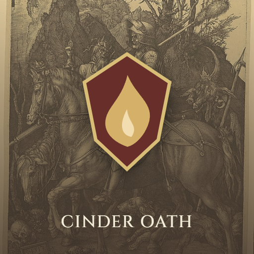

<- all projects

Cinder Oath
PC
Volume
Live
Build a deck of dangerous promises and outwit the things that collect them.
Your sentence ends at dawn, and until then every promise is a weapon. A condemned archivist must face seven keepers before sunrise, and each one binds you to a vow such as restraint, endurance or courage. Spend resolve to strike, guard, burn or heal, read each keeper's next intent, and honor the vow or take a scar for breaking it. After each keeper, draft a card and a relic and choose a camp. There are 90 cards, 30 relics, 3 disciplines, 7 keepers and 4 endings, with a story campaign, a daily challenge and an endless run of keepers.